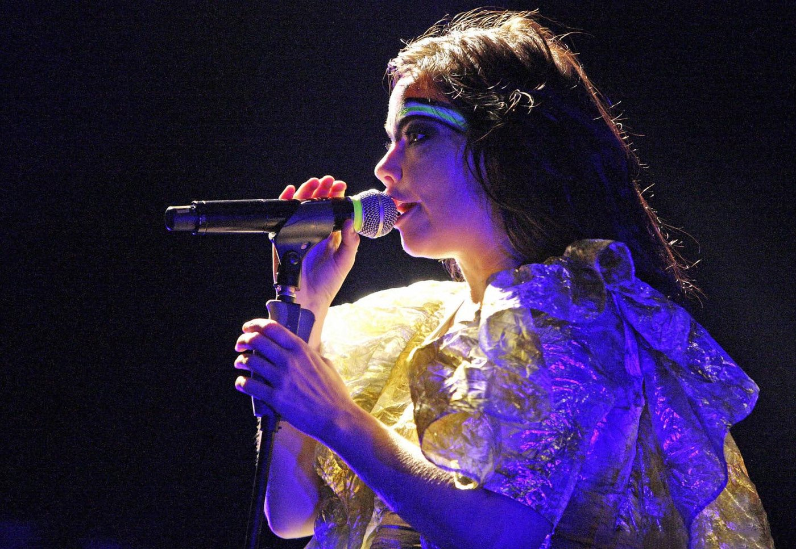

Bjork @ Opera House Forecourt, Sydney (23/01/08)
{kind=link}

It sure was a coup for the Sydney Festival organisers. Bjork, the quirky Icelandic singer who’s been one of the most consistent fixtures on the musical landscape over the last 20 years (and most recently in the news AGAIN for attacking a photographer after landing in New Zealand airport), had agreed to participate in Sydney’s biggest cultural festival: just another reason why, alongside the 10,000+ people street parties and nightly parties at the Becks’ Festival Bar, the city has been an exhilarating place to be this January. But consistent with the unusual character that she is, her involvement had to be under her terms of course, and Bjork wanted to perform at a unique venue. On the harbour to be exact. And that’s the story of how the 42-year-old star ended up performing under a full moon to a crowd of more than 5,000 at the Sydney Opera House forecourt.
Excitement levels were high, but prior to the gig it was hard to know what exactly to expect. She’d received mixed reviews for her Big Day Out performance the previous Sunday on the Gold Coast, with disgruntled Rage Against the Machine fans complained about having to watch her ‘unusual’ antics while waiting for their beloved headliners to come on. And daily rag The Brisbane Times were less than kind in their appraisal. Describe her set as “painful”, the cheeky reporter proceeded to make reference to her classic showtune It’s Oh So Quiet. “How apt those lyrics turned out to be, considering the mute reaction afforded Bjork by the 53,000 music fans… Just what possessed the Big Day Out’s organisers to invite Iceland’s bad girl of pop to Australia’s premier music festival was anybody’s guess.” Ouch. But as it turns out, the Brisbane Times can’t be trusted to capture what’s happening in the musical world beyond the latest Delta Goodrem stadium performance because at the Opera House last Wednesday, on a perfect summer night, Bjork did nothing less than captivate her audience.
When she first pranced onstage a little after 9pm she was dressed in a frilly gold dress, her face painted with that same red and green we’d seen from her first shows. It’s no secret that she’s an eccentric lass; she’s always fallen outside the boundaries of what we expect from our musical starlets and now that she’s approaching her mid 40s, it seems this is becoming even more pronounced. But of course, that’s all part of her charm: she exuded such an overwhelming charisma on stage that you know you’d just go all silly if you ever got to meet her. And on the topic of her eccentricity, there was a strange contradiction in the energy she was conveying to the crowd. As she danced around the stage without a care, she was equal part an uninhibited little girl, and crazy old lady who’s retreated into herself. Being the complex character that she is, it’s no surprise the mainstream media just don’t get it.
The rest of Bjork’s sizeable entourage wore jester-like outfits, and behind them a row of raised banners adorned the wall which looked like they’d been plucked straight from an old English court. What images graced these banners? Animals of course. Duh. And her quirkiness was never more on display than when she’d occasionally halt her beautiful warbling between songs to thank the crowd in her unmistakeable Icelandic accent. Looking towards the sky at one point, she exclaimed that, “The moon has gatecrashed her party.” Waves of affectionate laughter echoed through the crowd. It was simply the most whimsical thing she could have possibly said.
Opening with Earth Intruders, the crowd were mesmerised immediately and the first truly emotional moment of the show came when she whipped out Joga (State of Emergency); a song that perfectly captures the way Bjork has brought organic instruments together with electronic sounds throughout her career. It began with those familiar strings and her haunting, impassioned vocals, but when that industrial percussion rose to take prominence halfway through, it was greeted with its dazzling visual equivalent: bright green lasers that cut through the sky above the Opera House. It set the scene for what was an exhilarating performance, and the tone was lifted even higher when Bjork launched into her rendition of Army of Me. That was the most dancefloor-friendly moment of the show, but the song that got the biggest reaction was Hyperballad; bringing the two girls behind me to tears no less.
There was a 10-piece female Icelandic brass section providing a musical backdrop to the evening’s entertainment, but while Bjork herself may have been the centre of everybody’s attention, she was supported by a fairly hefty sidekick in the form of the cutting-edge musical technology that was on stage alongside her. The crowd were permitted to observe via the visual screens on either side of the stage, and the device hyped the most prior to the show was the Lemur, a computer touch screen that was able to manipulate electronic sounds on the fly. But even more astounding was the Reactable Table, a large circular device again operated via a touch screen, with its operator perched above it looking like he was peering into a witch’s cauldron. On the outer edges of the round table were a series smaller circles, each sporting a rune symbol that when he drew them with his index finger into the centre of the table, he proceeded to manipulate by twisting and turning them, each movement reflected in the synthetic sounds pumping out of the speakers. At one point the operator did something particularly gratuitous, moving one circle back to the outer edge of the table and then quickly drawing another two in and spinning them around quickly, and the crowd collectively gasped in amazement.
But the time Bjork walked off the stage a little after 10pm and the lights went down, I thought that was all we were going to hear. After all, encores just didn’t seem to be her style. But again she proved to be unpredictable, as it wasn’t long before she bounded back on stage for a rousing performance of Independence, dedicated to our country’s indigenous population. With rousing shouts of “Make your own stand, declare independence,” her entourage were dancing around on the stage with her, those green lasers again being blasted into the sky, confetti exploded onto the crowd. And then the show’s stunning climax: fireworks exploding into the sky above the Opera House. It was one of those moments that made you feel like a wonder-struck child, staring in awe. As the crowd strolled away afterwards down the streets of Circular Quay, we knew we’d witnessed something special, something truly beautiful and a unique experience never to be repeated. Even if the subtlety was lost on that hapless Brisbane Times reporter.